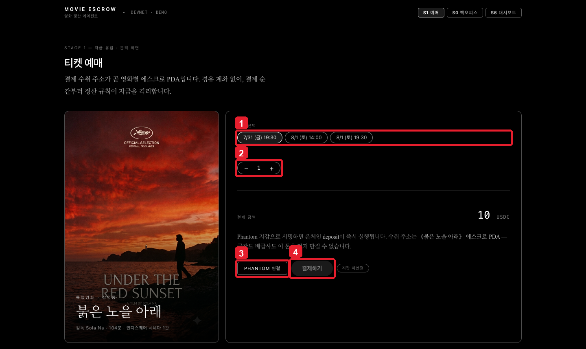
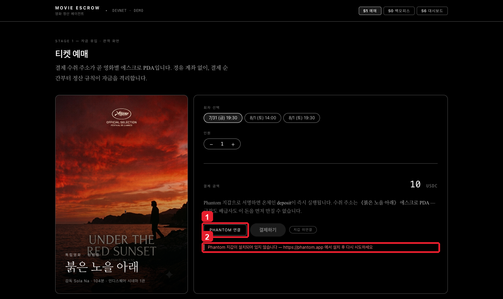
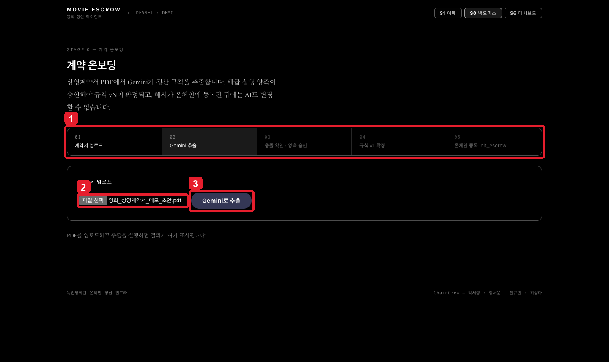
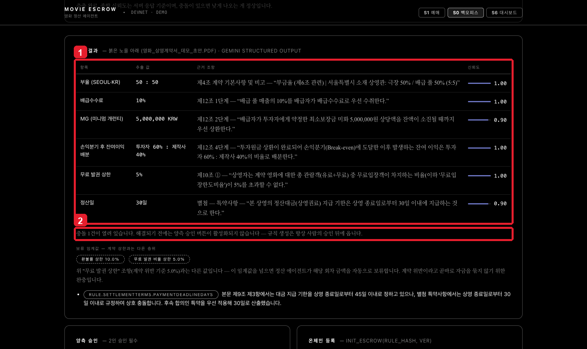
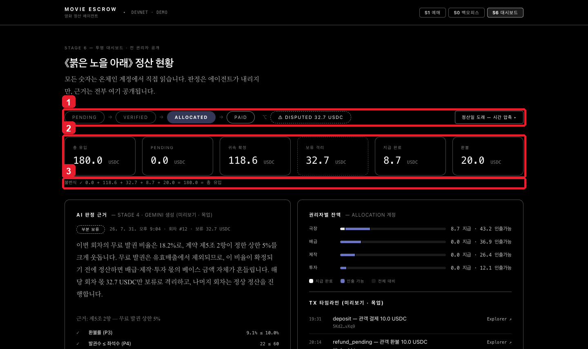
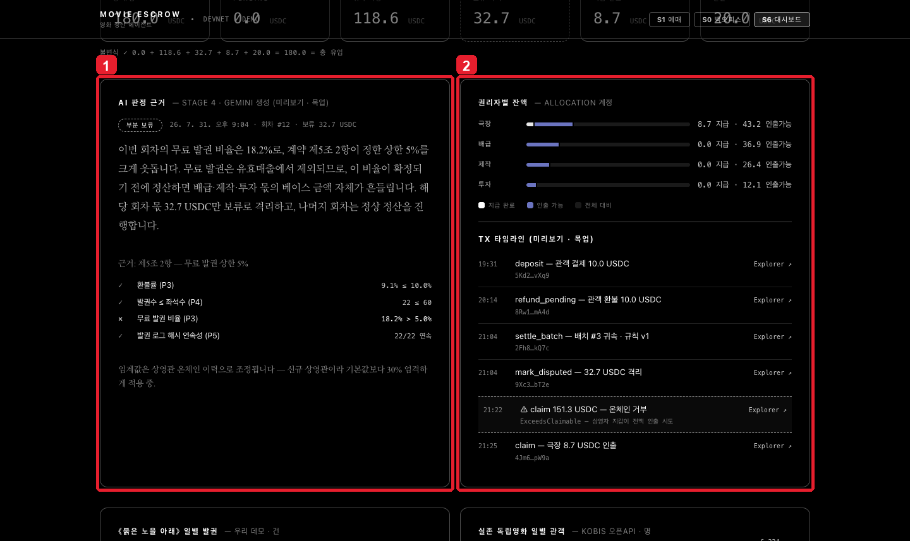
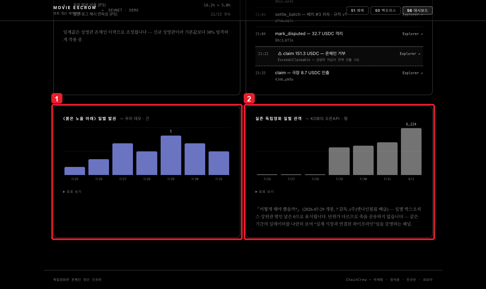

STEP 01 · 관객
상영 회차와 인원을 고릅니다
- 1관람할 회차를 선택합니다.
- 2인원을 조정하면 결제 금액이 자동으로 바뀝니다.
- 3Phantom 연결을 눌러 지갑 연결을 요청합니다.
-
4연결 후 결제하기를 누르면 지갑
서명을 거쳐
deposit트랜잭션을 만듭니다.

STEP 02 · 관객
Phantom 지갑을 준비합니다
- 1같은 브라우저에 Phantom 확장 프로그램을 설치하고 잠금을 해제합니다.
- 2확장 프로그램이 없으면 설치 안내가 표시됩니다. 모바일은 Phantom 앱 내부 브라우저를 사용합니다.

STEP 03 · 배급·상영 담당자
상영계약서에서 정산 규칙을 추출합니다
- 1상단 진행 단계에서 현재 위치를 확인합니다.
- 2PDF 상영계약서를 선택합니다. 원문은 온체인에 올리지 않습니다.
- 3Gemini로 추출을 눌러 부율·수수료·무료 발권 한도와 근거 조항을 구조화합니다.

STEP 04 · 배급·상영 담당자
추출 근거와 충돌을 확인합니다
- 1항목별 추출 값·근거 문장·신뢰도를 함께 확인합니다.
- 2충돌이 남아 있으면 양측 승인 버튼이 잠깁니다. 사람이 해결하기 전에는 규칙을 확정하지 않습니다.

STEP 05 · 전 권리자
정산 상태와 자금 불변식을 확인합니다
- 1Pending → Verified → Allocated → Paid 상태와 Disputed 분기를 확인합니다. 정산일 도래는 실제 Agent 호출 버튼입니다.
- 2총 유입·귀속·보류·지급·환불 금액을 확인합니다.
- 3각 자금 구획의 합이 총 유입과 같은지 불변식을 확인합니다.

STEP 06 · 전 권리자
AI 판정 근거와 권리자별 잔액을 대조합니다
- 1부분 보류 여부, 적용 임계값과 판정 근거를 확인합니다.
- 2극장·배급·제작·투자자의 지급 완료액과 인출 가능액, 트랜잭션 타임라인을 확인합니다.

STEP 07 · 데이터 검증
데모 발권 데이터와 KOBIS 실데이터를 함께 봅니다
- 1우리 데모의 일별 발권 건수를 확인합니다.
- 2KOBIS 오픈API에서 가져온 실존 독립영화 관객 수와 나란히 비교합니다.

현재 자동화하지 않은 단계
- Phantom 서명·실제 결제: 자동화 브라우저에 개인키를 넣지 않았습니다. 또한 현재 배포 번들은 Solana RPC가 localnet 기본값이어서 Devnet 재빌드가 먼저 필요합니다.
-
정산 배치 재실행: 기존
indie-2026-001Escrow는 이미 정산됐습니다. 신규 Escrow 없이 버튼을 누르지 않습니다. - 온체인 등록 버튼: 백오피스 화면에서도 ‘B 연동 대기’로 비활성화되어 있습니다.
- 대시보드 잔액: 현재 일부는 목업이며 화면에 그 사실을 표시합니다.
이 제한은 실패를 숨긴 것이 아니라, 실제 화면과 코드 상태를 기준으로 기록한 것입니다.